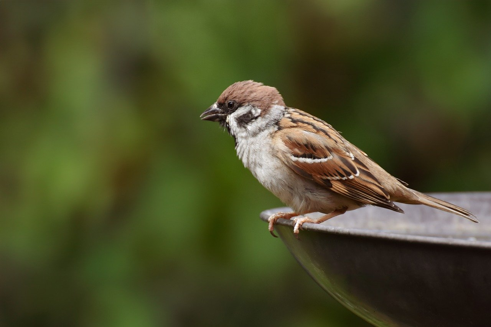
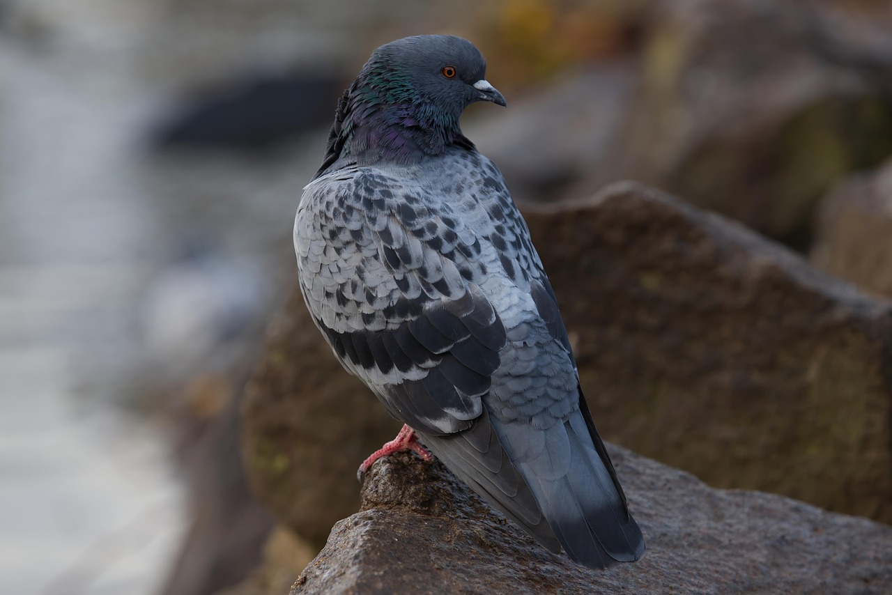
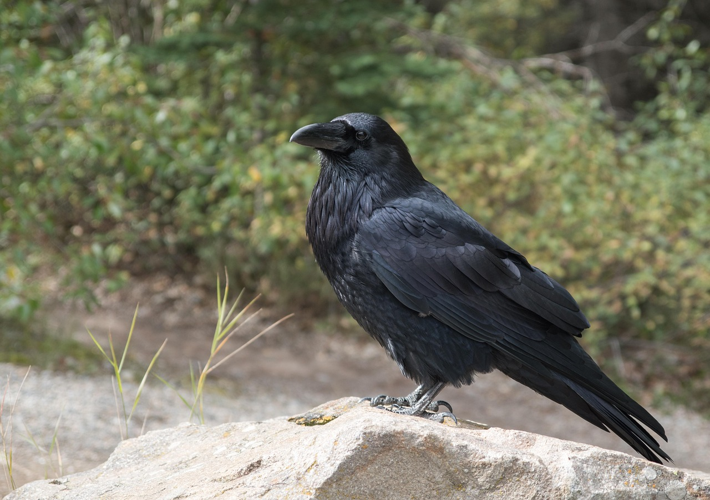

鳥
- 特徴
- 飛翔に適した羽毛（羽軸・羽枝・羽毛囊）を持ち、飛ぶ・滑空することができる
- 恒温動物で体温を維持しやすく、高い代謝率を誇る
- 優れた視覚・聴覚を持つ種が多く、獲物の捕捉や長距離の渡りに適応
- くちばしは食性に応じて形状が多様化（種子食・昆虫食・魚食など）
- 日本にいる代表的な鳥種
- スズメ
体長約14cm。都市部から農村まで幅広く分布し、人家近くでよく見かける。
- ハト
体長約30cm。公園や街中に群れをなして飛来する。平和の象徴としても知られる。
- カラス
水中の魚を見るために、屈折率の変化を瞬時に補正できる視覚を持つ。
- ツバメ
オスはくちばし全体が黒い
メスは下くちばしの先が赤っぽい - キジ
体長約60cm。山野の低木地に生息。雄の鮮やかな羽色と大きな声が特徴。
- スズメ


